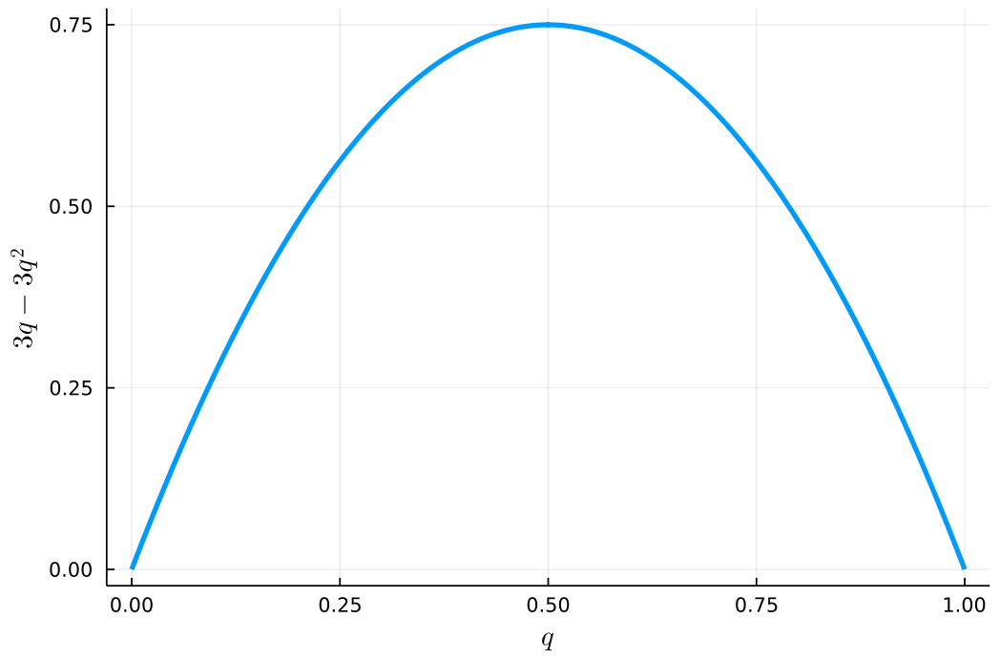

AR - Lesson 12
Indice
Herding - Seguire il Gregge
Abbiamo visto che quando degli individui sono connessi tra di loro in una rete, le loro decisioni e comportamenti possono essere influenzati (ed influenzare) da quello degli altri individui vicini.
Nello studio dei processi di diffusione abbiamo visto come il comportamento dei singoli individui veniva influenzato dalla diretta comunicazione col proprio viciano.
In questa sezione vedremo come le decisioni dei singoli individui possono essere influenzate dalle osservazioni fatte sul comportamento degli altri, senza lo scambio di alcuna informaione.
In sostanza come è possibile estrapolare informazioni dal comportamento della massa.
Come primo esempio supponiamo di essere in vacanza in un nuovo posto e di dover scegliere un ristorante in cui mangiare.
In base alle nostre recerche personali scopriamo che il ristorante A è il migliore che ci sia in zona, e quindi decidiamo di andarci.
Poco prima di entrare vediamo che nel ristorante accanto, il ristorante B, c'è moltissima clientela, mentre il ristorante A è praticamente vuoto.
Non è del tutto irrazionale pensare che tutte le persone che vanno al ristorante B abbiano informazioni private che noi non abbiamo, e supporre che in realtà il ristorante è il migliore.
In effetti il fatto che il ristorante A sia quasi vuoto non aiuta: verrebbe da pensare che siamo in possesso di informazioni non del tutto esatte o complete.
Perciò decidiamo anche noi di andare al ristorante B.
In questo caso diremo che è avvenuta una cascata informativa (o herding).
In poche parole, una cascata informativa occorre quando gli individui prendono decisioni in maniera sequenziale, osservando ciò che hanno fatto gli altri prima e cercando di inferire qualche informazione aggiuntiva che ha spinto gli altri ad agire in tale maniera.
La cosa più interessante è che gli individui che "imitano" gli altri non lo fanno del tutto stupida, bensì facendo una serie di ragionamenti ed inferenze più che sensate.
Naturalmente, l'imitazione può verificarsi anche a causa della pressione sociale all'esigienza di volersi conformare, senza alcuna causa informativa sottostante, e non è sempre facile distinguere questi due fenomeni.
Consideriamo infatti l'esperimento di Milgram, Bickman e Berkowitz del 1960, in cui venivano poste agli angoli delle strade dei gruppi di persone (da un minimo di 1 a un massimo di 15) a guardare il cielo senza alcun motivo.
Si è osservato quanti passanti si sono fermati e hanno volto lo sguardo al cielo.
Come prima osservazione si è visto che con una sola persona, pochissimi passanti si fermavano.
Se invece 5 persone fissavano il cielo, alcuni passanti si fermavanom a imitare, ma la maggior parte li ignorava.
Infine, con un gruppo di 15 persone che guardano verso l'alto, hanno scoperto che il 45% dei passanti imitava, fermandosi e guardare il cielo cercando di capire.
Quest'ultimo esperimento lascia pensare che esiste una soglia critica oltre la quale si scatena l'herding su una considerevole porzione di popolazione.
Infatti, se camminando per strada vediamo due persone che fissano il cielo, è naturale pensare che i due individui non siano proprio sani mentalmente.
Se invece ne vediamo 15, molto propbabilmente guarderemo anche noi verso l'alto, per cercare di capire cosa c'è di interessante.
Alcune domande nascono spontanee:
- esiste sempre una soglia critica che scatena l'herding di massa?
- e se esiste, come fare a trovarla?
A Simple Herding Experiment: Il Gioco delle Urne
Consideriamo un genere di gioco con la seguente tipologia di regole
- C'è una decisione da prendere
- I giocatori prendono le proprie decisioni in sequenza (uno dopo l'altro), e ogni persona può osservare le scelte fatte da coloro che hanno agito prima.
- Ogni giocatore ha alcune informazioni private che aiutano a guidare la propria decisione.
- Un giocatore non può osservare direttamente le informazioni private che gli altri giocatori hanno, ma può trarre deduzioni su queste informazioni private da ciò che fanno.
Secondo queste indicazioni, instanziamo un gioco con le seguenti regole:
- C'è uno scommettitore in una stanza chiusa, e una serie di giocatori all'esterno.
- Lo scommettitore inserisce due palline rosse ed una blu in un'urna (che chiameremo
MR, a Maggioranza Rossa), e due palline blu e una rossa in un'altra urna (che chiameremoMB, a Maggioranza Blu). - Lo scommettitore poi mischia le due urne e ne sceglie una a caso (senza avere la possibilità di vederne il contenuto).
- Un giocatore alla volta entra nella stanza ed estrae una pallina dall'urna, e poi la reinserisce.
- Il giocatore comunica a tutti quanti se ritiene che l'urna sia
MRoMB(sulla base delle sue informazioni). Importante: il giocatore non deve comunicare il colore della pallina pescata. - Al termine vinceranno solo i giocatori che hanno indovinato quale urna è stata scelta inizialmente (
MRoMB).
Per definizione di questo gioco, l'informazione privata dei singoli giocatori è l'esito dell'estrazione (pallina blu o pallina rossa), e questa non viene mai condivisa con gli altri.
Un giocatore però può inferire quale urna è meglio scegliere in base alle scelte fatte dagli altri prima (come vedremo adesso).
- Primo giocatore
- prima di estrarre la pallina, il primo giocatore è in possesso della sola informazione "l'urna è
MRoMB". Non avnedo altre informazioni, a prescindere da cosa pescherà il primo giocatore, la probabilità che l'urna siaMRoMBè la stessa. Perciò gli conviene scomettere sul colore della pallina estratta: se pesca una pallina blu gli conviene scommettere suMB(stesso discorso perMR). - Secondo giocatore
- a questo punto il secondo giocatore può dedurre l'esito dell'estrazione del primo giocatore sulla base della sua scommessa.
Senza perdita di generalità, supponiamo che il primo giocatore abbia scommesso
MB(e che quindi abbia estratto una pallina blu). Se il secondo estrae una pallina blu, allora sa che sono state esatratte due palline blu consecutive, e che quindi è più conveniente scommettere suMB. Se invece estrae una pallina rossa, si ritrova nella stessa situazione inizale del primo giocatore (senza alcuna informazione rilevante), perciò gli conviene scommettereMRin accordo alla sua estrazione. - Terzo giocatore
- anche il terzo giocatore è in grado di dedurre le estrazioni dei giocatori precedenti: se sono discordi allora sono avvenute due estrazioni discorde, se sono concorde allora sono avvenute due estrazioni di palline dello stesso colore.
Consideriamo il caso in cui le prime due estrazioni siano discordi, in questo caso al terzo giocatore conviene rispondere in accordo a ciò che pesca (se pesca una pallina blu gli conviene votare
MB, se ne pesca una rossa gli conviene votareMR). Consideriamo ora il caso in cui i primi due giocatori abbiamo voti condori, e senza perdita di generalità supponiamo che abbiano entrambi votatoMB. Se il terzo giocatore pesca una pallina blu, allora vuol dire che sono state estratte tre palline blu di seguito, rafforzando la propbailità cheMBsia la risposta esatta. Se invece estrae una rossa, comunque è più probabile che la risposta esatta siaMB, perché sono state estratte due palline blu di seguito e poi una rossa. Quindi in ogni caso gli conviene votareMB. - Quarto giocatore
- a questo punto il quarto giocatore può dedurre ciò che hanno fatto tutti i giocatori precedenti solamente se ci sono 2 voti concordi ed uno discorde (2 a 1).
Perché se ci fossero 3 voti concordi, sappiamo che il terzo giocatore avrebbe votato in accordo ai primi due in ogni caso a prescindere dall'esito della sua estrazione.
Supponiamo di essere nella situazione di "3 a 0" per
MB. Al quarto giocatore conviene votareMBin ogni caso (esattamente come per il terzo giocatore).
A questo punto, dal quinto giocatore in poi, si genera una cascata informativa a favore di MB, a prescindere dalle singole estrazioni.
Teorema di Bayes
Per formalizzare meglio la meccanica precedentemente descritta è necessario enunciare il Teorema di Bayes.
Teorema di Bayes siano i due eventi \(A,B \in \Omega\) di probabilità non nulla, allora \[ \mathcal{P}(A | B) = \frac{\mathcal{P}(B | A) \cdot \mathcal{P}(A)}{ \mathcal{P}(B) } \]
Proof per definizione di probabilità condizionata abbiamo che
\begin{align*} \mathcal{P}(A | B) &= \frac{\mathcal{P}(A \cap B)}{\mathcal{P}(B)}\\ \mathcal{P}(B | A) &= \frac{\mathcal{P}(A \cap B)}{\mathcal{P}(A)} \end{align*}ciò implica che \[ \mathcal{P}(A \cap B) = \mathcal{P}(A | B) \cdot \mathcal{P}(B) = \mathcal{P}(B | A) \cdot \mathcal{P}(A) \] Sostituendo opportunamente otteniamo l'enunciato del teorema \[ \mathcal{P}(A | B) = \frac{\mathcal{P}(A \cap B)}{\mathcal{P}(B)} = \frac{\mathcal{P}(B | A) \cdot \mathcal{P}(A)}{\mathcal{P}(B)} \;\; \square \]
Facendo qualche opportuna sostituzione, possiamo riscrivere \(\mathcal{P}(B)\) come segue
\begin{align*} \mathcal{P}(B) &= \mathcal{P}(B \cap \Omega)\\ &= \mathcal{P}(B \cap (A \cup A^{\mathcal{C}}))\\ &= \mathcal{P}((B \cap A) \cup (B \cap A^{\mathcal{C}}))\\ &= \mathcal{P}(B \cap A) + \mathcal{P}(B \cap A^{\mathcal{C}})\\ &= \mathcal{P}(B | A) \cdot \mathcal{P}(A) + \mathcal{P}(B | A^{\mathcal{C}}) \cdot \mathcal{P}(A^{\mathcal{C}}) \end{align*}perciò \[ \mathcal{P}(A | B) = \frac{\mathcal{P}(B | A) \cdot \mathcal{P}(A)}{ \mathcal{P}(B | A) \cdot \mathcal{P}(A) + \mathcal{P}(B | A^{\mathcal{C}}) \cdot \mathcal{P}(A^{\mathcal{C}}) } \]
Siano gli eventi:
- \(MR\) : "l'urna è a maggioranza rossa"
- \(MB\) : "l'urna è a maggioranza blu"
- \(r\) : "è stata estratta una pallina rossa"
- \(b\) : "è stata estratta una pallina blu"
Osserviamo inoltre che i precedenti eventi sono mutualmente complementari \[ MR = MB^{\mathcal{C}}\\ MB = MA^{\mathcal{C}}\\ b = r^{\mathcal{C}}\\ r = b^{\mathcal{C}} \]
Secondo le regole del gioco sappiamo che \[ \mathcal{P}(MR) = \mathcal{P}(MB) = \frac{1}{2}\\ \mathcal{P}(r | MR) = \frac{2}{3}; \;\; \mathcal{P}(b | MR) = \frac{1}{3}\\ \mathcal{P}(r | MB) = \frac{1}{3}; \;\; \mathcal{P}(b | MB) = \frac{2}{3} \]
Giocatore 1: Supponiamo senza perdita di generalità che il primo giocatore estrae una pallina blu, essi dovrà calcolare la probabilità che l'urna sia a maggioranza blu o rossa, e questo si può fare grazie al teorema di Bayes
\begin{align*} \mathcal{P}(MB | b) &= \frac{\mathcal{P}(b | MB) \cdot \mathcal{P}(MB)}{\mathcal{P}(b | MB) \cdot \mathcal{P}(MB) + \mathcal{P}(b | MR) \cdot \mathcal{P}(MR)} = \frac{2}{3}\\ \\ \mathcal{P}(MR | b) &= \frac{\mathcal{P}(b | MR) \cdot \mathcal{P}(MR)}{\mathcal{P}(b | MR) \cdot \mathcal{P}(MR) + \mathcal{P}(b | MB) \cdot \mathcal{P}(MB)} = \frac{1}{3} \end{align*}
perciò al primo giocatore conviene votare in accordo alla sua estrazione.
Giocatore 2: Vediamo ora quale strategia è migliore per il secondo giocatore. Consideriamo come prima situazione quella in cui esso estrae una pallina rossa, ed indichiamo con \(br\) l'evento "sono state estratte in ordine una pallina blu e poi una rossa". Dato che il secondo giocatore sa esasttamente cosa ha pescato il primo (dato che lo può inferire con certezza assumendo che il primo giocaotre giochi correttamente), si può affermare che il secondo giocatore si trova a dover calcolare le seguenti probabilità
\begin{align*} \mathcal{P}(MB | br) &= \frac{\mathcal{P}(br | MB) \cdot \mathcal{P}(MB)}{\mathcal{P}(br | MB) \cdot \mathcal{P}(MB) + \mathcal{P}(br | MR) \cdot \mathcal{P}(MR)} = \frac{1}{2}\\ \\ \mathcal{P}(MR | br) &= \frac{\mathcal{P}(br | MR) \cdot \mathcal{P}(MR)}{\mathcal{P}(br | MR) \cdot \mathcal{P}(MR) + \mathcal{P}(br | MB) \cdot \mathcal{P}(MB)} = \frac{1}{2} \end{align*}
perciò il secondo giocatore non può estrarre alcuna informazione utile dall'estrazione del primo, e quindi gli conviene scommettere in accordo a ciò che estrae.
Consideriamo ora il caso in cui il secondo giocate estrae una pallina blu.
In questo l'informazione riguardo la prima estrazione è realmente utile, in quanto possiamo dire che la probabilità è nettamente più sbilanciata verso MB
Giocatore 3: A questo punto (sempre supponendo che la prima estrazione sia stata una pallina blu) possiamo essere in due situazioni differenti
- \(br\): sono avvenute in sequenza le estrazioni blu-rossa
- \(bb\): sono avvenute in sequenza le estrazioni blu-blu
Partendo dalla prima, vediamo quale è la strategia migliore per il terzo giocatore.
Caso \(brb\):
\begin{align*} \mathcal{P}(MB | brb) &= \frac{\mathcal{P}(brb | MB) \cdot \mathcal{P}(MB)}{\mathcal{P}(brb | MB) \cdot \mathcal{P}(MB) + \mathcal{P}(brb | MR) \cdot \mathcal{P}(MR)} = \frac{2}{3}\\ \\ \mathcal{P}(MR | brb) &= \frac{\mathcal{P}(brb | MR) \cdot \mathcal{P}(MR)}{\mathcal{P}(brb | MR) \cdot \mathcal{P}(MR) + \mathcal{P}(brb | MB) \cdot \mathcal{P}(MB)} = \frac{1}{3} \end{align*}Caso \(brr\):
\begin{align*} \mathcal{P}(MB | brr) &= \frac{\mathcal{P}(brr | MB) \cdot \mathcal{P}(MB)}{\mathcal{P}(brr | MB) \cdot \mathcal{P}(MB) + \mathcal{P}(brr | MR) \cdot \mathcal{P}(MR)} = \frac{1}{3}\\ \\ \mathcal{P}(MR | brr) &= \frac{\mathcal{P}(brr | MR) \cdot \mathcal{P}(MR)}{\mathcal{P}(brr | MR) \cdot \mathcal{P}(MR) + \mathcal{P}(brr | MB) \cdot \mathcal{P}(MB)} = \frac{2}{3} \end{align*}
Perciò se i pirmi due voti sono discordi al terzo giocatore conviene votare in accordo alla sua estrazione (come già intuito in precedenza).
Vediamo ora cosa accade se i primi due giocatori hanno voti concordi.
Caso \(bbb\):
\begin{align*} \mathcal{P}(MB | bbb) &= \frac{\mathcal{P}(bbb | MB) \cdot \mathcal{P}(MB)}{\mathcal{P}(bbb | MB) \cdot \mathcal{P}(MB) + \mathcal{P}(bbb | MR) \cdot \mathcal{P}(MR)} = \frac{8}{9}\\ \\ \mathcal{P}(MR | bbb) &= \frac{\mathcal{P}(bbb | MR) \cdot \mathcal{P}(MR)}{\mathcal{P}(bbb | MR) \cdot \mathcal{P}(MR) + \mathcal{P}(bbb | MB) \cdot \mathcal{P}(MB)} = \frac{1}{9} \end{align*}Caso \(bbr\):
\begin{align*} \mathcal{P}(MB | bbr) &= \frac{\mathcal{P}(bbr | MB) \cdot \mathcal{P}(MB)}{\mathcal{P}(bbr | MB) \cdot \mathcal{P}(MB) + \mathcal{P}(bbr | MR) \cdot \mathcal{P}(MR)} = \frac{2}{3}\\ \\ \mathcal{P}(MR | bbr) &= \frac{\mathcal{P}(bbr | MR) \cdot \mathcal{P}(MR)}{\mathcal{P}(bbr | MR) \cdot \mathcal{P}(MR) + \mathcal{P}(bbr | MB) \cdot \mathcal{P}(MB)} = \frac{1}{3} \end{align*}
In questo caso al giocatore 3 conviene votare in accordo a ciò che hanno votato i primi due giocatori, a prescindere da quale sarà l'esito della sua estrazione.
Giocatore 4: Senza perdita di generalità consideriamo il caso in cui le prime due estrazioni sono entrambe blu. Il giocatore 4 non può essere certo di cosa ha estratto il giocatore 3, perciò gli conviene sempre calcolare due probabilità differenti, quella in cui il terzo ha estratto una pallina rossa e quella in cui ne ha estratta una blu.
\begin{align*} \mathcal{P}(MB | bbbb) = \frac{16}{17}; \;\; &\mathcal{P}(MR | bbbb) = \frac{1}{17}\\ \mathcal{P}(MB | bbbr) = \frac{8}{9}; \;\; &\mathcal{P}(MR | bbbr) = \frac{1}{9}\\ \mathcal{P}(MB | bbrb) = \frac{8}{9}; \;\; &\mathcal{P}(MR | bbrb) = \frac{1}{9}\\ \mathcal{P}(MB | bbrr) = \frac{1}{2}; \;\; &\mathcal{P}(MR | bbrr) = \frac{1}{2} \end{align*}
Perciò votando MB il giocatore 4 non ricade mai nella strategia che minimizza la probabilità di sucesso.
Al più può ritrovarsi nel caso in cui le probabilità di successo e insuccesso equivalgono, ovvero quando giocatori 3 e 4 estraggono entrambi una pallina rossa.
Putroppo però il giocatore 4 non può sapere cosa ha estratto il terzo giocatore, perciò gli conviene votare comunque MB a prescindere dalla sua estrazione.
Giocatore 5: sapendo che le prime due estrazioni sono state blu-blu, il giocatore 5 (come il giocatore 4) deve calcolare tutte le probabilità rispetto alle possibili
combinazioni di estrazioni dei giocatori 3 e 4.
Caso \(bbbb\):
\begin{align*} \mathcal{P}(MB | bbbbb) = \frac{32}{33}; \;\; &\mathcal{P}(MR | bbbbb) = \frac{1}{33}\\ \mathcal{P}(MB | bbbbr) = \frac{8}{9}; \;\; &\mathcal{P}(MR | bbbbr) = \frac{1}{9} \end{align*}Caso \(bbbr\):
\begin{align*} \mathcal{P}(MB | bbbrb) = \frac{8}{9}; \;\; &\mathcal{P}(MR | bbbrb) = \frac{1}{9}\\ \mathcal{P}(MB | bbbrr) = \frac{2}{3}; \;\; &\mathcal{P}(MR | bbbrr) = \frac{1}{3} \end{align*}Caso \(bbrb\):
\begin{align*} \mathcal{P}(MB | bbrbb) = \frac{8}{9}; \;\; &\mathcal{P}(MR | bbrbb) = \frac{1}{9}\\ \mathcal{P}(MB | bbrbr) = \frac{2}{3}; \;\; &\mathcal{P}(MR | bbrbr) = \frac{1}{3} \end{align*}Caso \(bbrr\):
\begin{align*} \mathcal{P}(MB | bbrrb) = \frac{2}{3}; \;\; &\mathcal{P}(MR | bbrrb) = \frac{1}{3}\\ \bigstar \mathcal{P}(MB | bbrrr) = \frac{1}{3}; \;\; &\mathcal{P}(MR | bbrrr) = \frac{2}{3} \end{align*}
Al giocatore 5 conviene sempre scommettere su MB a meno che il terzo e il quarto giocatore non abbiano estratto due palline rosse.
Questo purtroppo il giocatore 5 non può saperlo, in quanto i giocatori 3 e 4 voteranno MB a prescindere dall'esito delle proprie estrazioni.
Perciò possiamo dire che se le prime due estrazioni sono blu-blu si genera una cascata imitativa in cui tutti i giocatori voteranno MB,
a prescindere dalle proprie informazioni private!
Un Modello Generale di Sequential Decision Making
Come visto negli esperimenti precedenti o nel gioco delle due urne, il fenomeno dell'Herding si presenta in situazioni che hanno delle caratteristiche in comune, ovvero:
- Ogni individuo deve prendere una decisione.
- Ogni individuo ha una propria informazione privata.
- Ogni individuo riceve dalla rete un'informazione incompleta, ovvero sa le scelte degli altri individui ma non l'informazione che li ha spinti a prendere tali decisioni.
- Le decisioni vengono prese in sequenza, dopo aver osservato quello che hanno fatto gli altri in precedenza.
- Ogni individuo prende la propria decisione in maniera puramente razionale: inferisce dalle proprie osservazioni quale è la strategia migliore da adottare, senza alcuna influenza o pressione sociale.
- Si scatena una cascata informativa (herding), quando una certa massa critica prende una medesima decisione.
Descriviamo ora in maniera formale un modello che cattura tutte queste caratteristiche
Punto 1: Decisioni Individuali
Per semplicità assumiamo che le decisioni da prendere sono decisioni binarie. Senza perdita di generalità assumiamo che le uniche due alternative sono
Y: l'individuo accetta una proposta.N: l'individuo rifiuta una proposta.
Solo una delle due alternative è quella giusta.
La probabilità che Y sia l'alternativa giusta è \(\mathcal{P}(Y) = p\), mentre la probabilità che quella giusta sia N è \(\mathcal{P}(N) = 1-p\).
Se un individuo accetta (Y) una proposta avrà un profitto \(v_g > 0\)1 se Y era la risposta corretta, o una perdita \(v_b \leq 0\)1 se la risposta Y era errata.
Contrariamente, se l'individuo non accetta (N) non otterrà nessun profitto e nessuna perdita.
Affinché sia equivalente per undividuo accettare (Y) o rifiutare (N), deve essere che
\[
v_g p + v_b(1-p) = 0
\]
Punto 2: Informazioni Private
Ongi individuo possiede un'informazione privata, che possiamo assumere ricevere sottoforma di segnale privato.
I due possibili segnali possono essere A (Accetta) ed R (Rifiuta).
Se la scelta giusta è Y, allora la probabilità di ricevere come segnale privato A è \(q > \frac{1}{2}\).
Viceversa se la scelta giusta è N, allora la probabilità di ricevere come segnale privato A è \(1 - q\).
Simmetricamente per R.
Più formalmente possiamo esprimere queste proprietà con probabilità condizionate
Punto 3: Osservazioni
L'individuo \(i\)-esimo che deve prendere una decisione ricava dalla rete la sequenza \( (X_1, ..., X_{i-1}) \in \lbrace Y, N \rbrace^{i-1} \) delle decisioni prese dai precedenti \(i-1\) individui.
Punto 4: Decisioni Sequenzali
L'individuo \(i\)-esimo prende una decisione dopo che i precedenti \(i-1\) individui hanno preso la loro.
Punto 5: Decisioni Razionali
Supponiamo che per l'individui \(i\) inizialmente Y ed N sono alternative equivalenti, ovvero che \(v_g p + v_b(1-p) = 0\).
Se dopo le decisioni dei primi \(i - 1\) individui la probabilità che Y sia corretta diventa una certa quantità \(p'\),
all'individui \(i\) converrà accettare se e soltanto se
\[
v_gp' + v_b(1 - p') \geq 0
\]
e questo accade se \(p' \geq p\), ovvero se non peggiora la probabilità che accettare sia la strategia corretta.
Punto 6: Massa Critica
Cerchiamo ora di individuare quanto deve essere grande una massa critica che scatena l'herding.
Indichiamo con \(S \in \lbrace A, R \rbrace^*\) la sequenza dei segnali privati ricevuti dagli individui.
Consideriamo la scelta del primo individuo, ovvero quando \(\vert S \vert = 1\).
Se \(S = (A)\), allora la probabilità che la scelta corretta sia Y è
viceversa la probabilità che la scelta corretta sia N ricevendo il segnale A è
\[
\mathcal{P}(N \vert A) = 1 - \mathcal{P}(Y \vert A) < p
\]
In maniera simmetrica, se riceviamo come primo segnale privato R avremo che
\[
\mathcal{P}(Y \vert R) < p\\
\mathcal{P}(N \vert R) > p
\]
Segue quindi che in assenza di ulteriori informazioni, quando un individuo ha solamente la propria informazione privata, conviene rispondere in accordo ad essa:
se riceve A conviene rispondere Y, se riceve R conviene rispondere N.
Consideriamo ora il caso in cui \(\vert S \vert > 1\).
Supponiamo che in qualche maniera l'individuo che deve fare la scelta sia riuscito ad inferire tutta la sequanza di \(S\) (come in alcuni casi del gioco delle due urne).
Diciamo che nella sequenza \(S\) è presente \(a\) volte l'elemento A ed \(r\) volte l'elemento R.
Perciò la probabilità Y sia la risposta esatta, sapendo la sequenza \(S\) di segnali privati sarà
Se \(a > r\), e dato che \(q > 1/2\), avremo al secondo addendo al denominatore che \[ (1-q)^a q^r = (1-q)^{a-r+r} q^r < q^{a-r} (1-q)^r q^r = q^a (1-q)^r \] e quindi
\begin{align*} \mathcal{P}(Y \vert S) &= \frac{q^a (1-q)^r p}{q^a (1-q)^r p + (1-q)^a q^r (1-p)}\\ &> \frac{q^a (1-q)^r p}{q^a (1-q)^r p + q^a (1-q)^r (1-p)} = p \end{align*}Viceversa, se \(a < r\), accade che \[ (1-q)^a q^r = (1-q)^a q^a q^{r-a} > (1-q)^a q^a (1-q)^{r-a} = q^a (1-q)^r \] e quindi
\begin{align*} \mathcal{P}(Y \vert S) &= \frac{q^a (1-q)^r p}{q^a (1-q)^r p + (1-q)^a q^r (1-p)}\\ &< \frac{q^a (1-q)^r p}{q^a (1-q)^r p + q^a (1-q)^r (1-p)} = p \end{align*}
Infine, se \(a = r\) allora \(q^a (1-q)^r = (1-q)^a q^r\), e quindi \(\mathcal{P}(Y \vert S) = p\).
Ricapitolando
\[
\mathcal{P}(Y \vert S) = \begin{cases}
> p &\mbox{se } a > r\\
< p &\mbox{se } a < r\\
= p &\mbox{se } a = r
\end{cases}
\]
Perciò se un individuo conosce l'intera sequenza di segnali privati dei giocatori precedenti, riesce a prendere la scelta che massimizza
la probabilità di vincita in base alla maggioranza:
se ci sono stati più segnali A conviene votare Y, se ce ne sono stati più R conviene votare N.
Osservare che il caso in cui \(a = r\) equivale sostanzialmente al caso in cui non si ha alcuna informazione aggiuntiva riguardo la
decisione da prendere (\(\mathcal{P}(Y \vert S) = \mathcal{P}(Y)\)), e quindi bisogna rifarsi solamente al proprio segnale privato.
Senza perdita di generalità supponiamo che l'\(n\)-esimo individuo riesca ad inferire tutta la sequenza \(S\) degli \(n-1\) precedenti segnali, e che \(a = r\).
Sia \(\sigma_n \in \lbrace A, R \rbrace\) il segnale privato che riceve l'\(n\)-esimo individuo.
Dato che stiamo assumendo che \(a = r\) avremo che
\[
\sigma_n = A \implies \mathcal{P}(Y \vert S \cup \lbrace \sigma_n \rbrace) = \mathcal{P}(Y \vert \sigma_n) > p\\
\sigma_n = R \implies \mathcal{P}(Y \vert S \cup \lbrace \sigma_n \rbrace) = \mathcal{P}(Y \vert \sigma_n) < p
\]
perciò l’individuo segue il suo segnale privato, qualunque esso sia.
Se invece \(a = r+1\) avremo che
\[
\sigma_n = A \implies \mathcal{P}(Y \vert S \cup \lbrace \sigma_n \rbrace) > p\\
\sigma_n = R \implies \mathcal{P}(Y \vert S \cup \lbrace \sigma_n \rbrace) = p
\]
e anche in questo caso l'individuo \(n\) segue il suo segnale privato.
Invece se \(a \geq r+2\) all'individuo \(n\) conviene sempre scommettere su Y, qualunque sia il suo segnale, scatenando così una cascata imitativa.
Simmetricamente per N quando \(r \geq a+2\).
Quindi, individuato la condizione per la quale scatta la cascata, ci si chiede in che situazione si arriva ad avere \(a \geq r+2\) (o \(r \geq a+2\))?
Fin quando i due segnali A ed R si alternano non può scattare l'herding, perché \(\vert a - r \vert \leq 1\).
Allora verrebbe da dire che quando si ottengono due segnali consecutivi può scattare l'herding.
Questa condizione è necessaria, ma non sufficiente.
Infatti, in una sequenza del tipo ARAR...ARAA due A consecutive bastano per scatenare la cascata imitativa per Y, ovvero bastano per avere \(a \geq r+2\).
Purtroppo però, nella stessa sequenza, se abbiamo due R consecutive non è sufficiente per far scattare una cascata imitativa di N.
Infatti nella sequenza ARAR...ARR abbiamo che \(a - r= 1\).
Perciò, per essere completamente certi di ottenere una cascata imitativa, si necessita di almeno 3 segnali identici consecutivi!
Calcoliamo ora la probabilità che una cascata si scateni entro il passo \(n\).
Indichiamo sempre con \(\sigma_i \in \lbrace A, R \rbrace\) il segnale privato dell'\(i\)-esimo individuo, e siano gli eventi
Osserviamo che \(\mathcal{B} \subseteq \mathcal{A}\), perciò \(\mathcal{P}(\mathcal{B}) \leq \mathcal{P}(\mathcal{A})\).
Indichiamo ora con \(\mathcal{H}_n\) l'evento "la cascata imitativa si innesca entro il passo \(n\)". La sua probabilità sarà \[ \mathcal{P}(\mathcal{H}_n) \geq \mathcal{P}(\mathcal{A}) \geq \mathcal{P}(\mathcal{B}) \] Per la legge di De Morgan avremo che \[ \mathcal{P}(\lnot \mathcal{H}_n) \leq \mathcal{P}(\lnot \mathcal{B}) = \mathcal{P}(\bigwedge_{1 \leq i \leq n/3} \lnot (\sigma_{3i-2} = \sigma_{3i-1} = \sigma_{3i})) \] Dato che gli eventi in \(\mathcal{B}\) sono tutti indipendenti tra di loro, abbiamo che \[ \mathcal{P}(\lnot \mathcal{H}_n) \leq \prod_{1 \leq i \leq n/3} \mathcal{P}(\lnot (\sigma_{3i-2} = \sigma_{3i-1} = \sigma_{3i})) \]
Per ogni \(i \leq n/3\) abbiamo che la probabilità dell'evento \((\sigma_{3i-2} = \sigma_{3i-1} = \sigma_{3i})\) sarà
\begin{align*} \mathcal{P}(\sigma_{3i-2} = \sigma_{3i-1} = \sigma_{3i}) &= \mathcal{P}((\sigma_{3i-2} = \sigma_{3i-1} = \sigma_{3i} = A) \vee (\sigma_{3i-2} = \sigma_{3i-1} = \sigma_{3i} = R))\\ &= \mathcal{P}(\sigma_{3i-2} = \sigma_{3i-1} = \sigma_{3i} = A) + \mathcal{P}(\sigma_{3i-2} = \sigma_{3i-1} = \sigma_{3i} = R)\\ &= \mathcal{P}(AAA) + \mathcal{P}(RRR)\\ &= \mathcal{P}(AAA) + \mathcal{P}(RRR)\\ &= \left[ \mathcal{P}(AAA \vert Y)\mathcal{P}(Y) + \mathcal{P}(AAA \vert N)\mathcal{P}(N)\right] + \left[ \mathcal{P}(RRR \vert Y)\mathcal{P}(Y) + \mathcal{P}(RRR \vert N)\mathcal{P}(N)\right]\\ &= \left[ q^3p + (1-q)^3(1-p) \right] + \left[ (1-q)^3p + q^3(1-p) \right]\\ &= 1 - 3q + 3q^2 \end{align*}Perciò il complemento sarà \[ \mathcal{P}(\lnot (\sigma_{3i-2} = \sigma_{3i-1} = \sigma_{3i})) = 1 - \mathcal{P}(\sigma_{3i-2} = \sigma_{3i-1} = \sigma_{3i}) = 3q - 3q^2 \]
Applicando questa uguaglianza per ogni \(i\) avremo che \[ \mathcal{P}(\lnot \mathcal{H}_n) \leq (3q - 3q^2)^{n/3} \]
Osserviamo in fine che \((3q - 3q^2) < 1\) per ogni \(q \in \left[0,1\right]\).

Figura 1: \((3q - 3q^2) < 1\) per ogni \(q \in \left[0,1\right]\).
Perciò possiamo concludere che la cascata imitativa si inneschera quasi sicuramente al crescere degli individui. \[ \mathcal{P}(\mathcal{H}_n) \geq 1 - (3q - 3q^2)^{n/3} \implies \lim_{n \rightarrow \infty} \mathcal{P}(\mathcal{H}_n) = 1 \]
[DISCUTERE OSSERVAZIONI FINALI…]
Note a piè di pagina:
i pedici \(g,b\) per \(v_g, v_b\) stanno ad indicare good, bad rispettivamente.